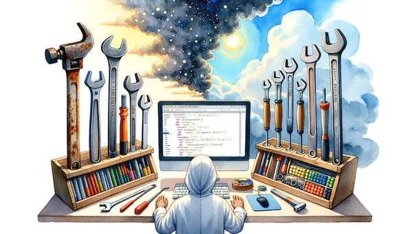

Eric J Ma's Website
written by Eric J. Ma on 2023-10-09 | tags: coding documentation darglint docstrings tools technologies pydoclint pyjanitor continuous integration til
In this blog post, I discuss the importance of documenting code and the risks of using outdated tools like darglint. I introduce pydoclint as a faster alternative and share a case study of how it solved a problem for the pyjanitor project. I provide instructions on getting started with pydoclint and highlight its default configurations. As a data scientist and tool developer, I'm always on the lookout for better tools, and pydoclint promises a smoother experience. Are you ready to embrace the future with pydoclint?
Read on... (413 words, approximately 3 minutes reading time)written by Eric J. Ma on 2023-10-09 | tags: python ruff tips and tricks rust pre-commit
In this blog post, I discuss the benefits of using Ruff, a blazing fast linter for Python code. With its speed and performance, Ruff can significantly reduce linting and code style checking times. It is written in Rust, known for its performance and safety features. I provide step-by-step instructions on how to integrate Ruff into your workflow, including installing the pre-commit hook and configuring Ruff in pyproject.toml. If you're looking to improve the quality and efficiency of your Python codebase, give Ruff a try. Are you ready to switch to Ruff and experience lightning-fast code checking?
Read on... (353 words, approximately 2 minutes reading time)written by Eric J. Ma on 2023-10-08 | tags: vscode tips and tricks til navigation repository productivity
In this blog post, I share a quick tip for using VSCode. I show how to easily locate and open any file within a repository using the Command Palette. By typing keywords in the file-browsing mode, you can quickly narrow down the exact file you want to open. Have you ever struggled to find a specific file in VSCode? Read on to discover this time-saving trick!
Read on... (115 words, approximately 1 minute reading time)written by Eric J. Ma on 2023-10-07 | tags: conda anaconda miniforge python distribution data science pip tooling python
In this blog post, I discuss the differences between the Anaconda, Miniconda, and Miniforge distributions of Python. Anaconda is the official distribution from Anaconda and comes with a wide range of data science packages. Miniconda is a smaller version of Anaconda, intended for use in Docker containers. Miniforge, developed by the conda-forge team, pulls packages from the conda-forge repository and includes mamba. The choice of distribution depends on your needs and preferences, with Miniforge being recommended for lightweight and open-source use, and Anaconda for enterprise support and backing the Python open source world.
Read on... (825 words, approximately 5 minutes reading time)written by Eric J. Ma on 2023-10-06 | tags: python llm gpt-4 coding outlines llamabot jinja2 prompt management chatbots
In this blog post, I explore the use of Outlines for prompt management in Python, specifically for LlamaBot. However, due to its heavy dependencies, I decided to reimplement the functionality using GPT-4 as a coding aid. The result was a successful reimplementation that allowed me to organize prompts within `.py` source modules more easily. A lesson from this experience. is the importance of clarity in programming even when we're using LLMs to help us code.
Read on... (954 words, approximately 5 minutes reading time)written by Eric J. Ma on 2023-10-05 | tags: data science agile scrum shape up software methodologies product development deep work team autonomy adaptability
In this blog post, I explore the limitations of Scrum for data science. I introduce Shape Up as a potential alternative. I discussed how Shape Up's ways of working align better with the unique needs of data science, such as deep domain specialization and varied feedback durations. I also highlighted how Shape Up embodies Agile's core values while suggesting modifications to suit data science projects better. Ultimately, I emphasized the importance of adaptability and delivering value, staying true to Agile's core principles.
Read on... (1954 words, approximately 10 minutes reading time)written by Eric J. Ma on 2023-09-30 | tags: automation git commit messages release notes data workflow data science jupyter notebook lab notebook
In this blog post, I discuss the importance of commit messages for data scientists and how automated commit message writers can improve their workflows. I highlight the psychological barrier of committing in-progress work and the benefits of having informative commit logs. By using automatic commit message generation, data scientists can create a digital lab notebook that summarizes their work and aids in resuming tasks. This blog post emphasizes the value of good commit logs in maximizing productivity for data scientists.
Read on... (481 words, approximately 3 minutes reading time)written by Eric J. Ma on 2023-09-26 | tags: resume career development gpt large language models chatgpt
In this blog post, I share my discovery of using ChatGPT and GPT4 to enhance a PhD student's resume. By utilizing the prompt and interactive process, you can efficiently condense bullet points without losing important information. I explain how the AI model suggests rephrasing and offer tips on how to further shorten bullet points.
Read on... (118 words, approximately 1 minute reading time)written by Eric J. Ma on 2023-09-23 | tags: commit messages conventional commits git workflow git llamabot python pre-commit software development data science
In this blog post, I discuss how I used LlamaBot, a Pythonic interface to Large Language Models (LLMs), to automatically write git commit messages following the Conventional Commits specification. By feeding the git diff into the LlamaBot SimpleBot, I was able to generate informative commit messages that make it easy to track project history and create accurate change logs. I also explain how to install the prepare-commit-msg hook to run the LlamaBot after pre-commit hooks and before editing the commit message. Interacting with LLMs requires precision and clarity in thinking to effectively utilize their capabilities.
Read on... (1392 words, approximately 7 minutes reading time)written by Eric J. Ma on 2023-09-17 | tags: artificial intelligence centaurs cyborgs ai tooling integration biotech research ml models automation
In this blog post, I discuss the concept of Centaurs and Cyborgs in relation to how consultants interact with AI tooling. Centaurs have a clear division of labor between humans and AI, while Cyborgs deeply integrate the two. I explain how I personally work in Centaur mode for tasks like writing blog posts, delegating certain aspects to AI, and in Cyborg mode for modeling work. I also explore how this framework can be applied to integrating ML tooling into biotech research. Overall, the two modes are not mutually exclusive and can be further refined.
Read on... (529 words, approximately 3 minutes reading time)